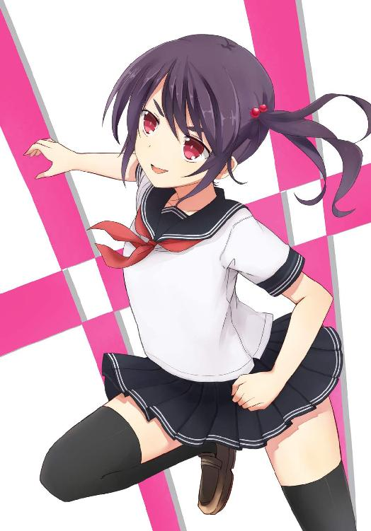
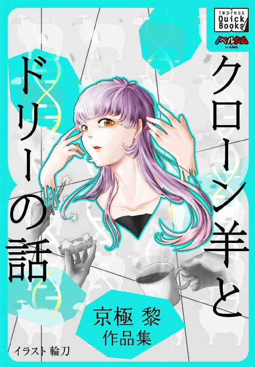
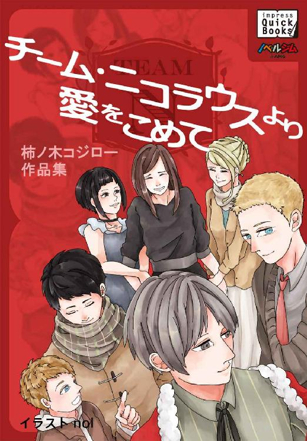

| もはやこれまで 湧田束作品集 impress QuickBooks | |
| 湧田 束 | |
| (2014) | |
もはやこれまで ノーカット版
１ 助走
部活が終わると急いで着替え、バッグを自転車の前カゴに放り込む。
「お先！」
「あ、奈々緒......」
部室の入口で美鈴に呼び止められたが、「あとでメール！」とだけ言い残し、私は前傾姿勢のまま短いスカートを靡かせて自転車を走らせた。
「間に合う......かな？」
直角ホイルスピンで方向転換し、ペダルを漕ぐスピードをさらに速めて校門を駆け抜ける。オレンジ色の夕陽が灰色に変わっていく中、時計の針は既に六時を指していた。
傾いた夕陽を背に受け、少し肌寒くなった秋の風を切る。猛スピードで駆け抜ける私の自転車を、公園で遊んでいた小学生達が目を丸くしてぽかんと見つめていた。
目標地点は繁華街にある、父の愛人のマンション。父が残業や出張と偽っては頻繁にこのマンションに出入りしていることを、私はようやく突き止めたんだ。
建物の手前で、前輪に急ブレーキをかけて百八十度ジャックナイフターンを決める。
宙に浮いたまま弧を描く後輪から砂埃が舞う。
電柱の陰に潜んでその時を待つ。しばらくすると、一人の中年男が若い女と腕を組んで歩いてくる。
「......来た」
歩道の二十メートルほど先。
マンションに入ろうとしている人影は、間違いなく父と愛人だった。
「見つけたよ......」
二人に向かって、私は再び自転車を漕ぎだした。
２ 疾走
次第に自転車のスピードを上げる。
私は腰を上げて前傾姿勢になり、自転車を左右に揺らしながら二人に近づいていく。ひゅんひゅんという風の音だけが、耳の奥にこだまする。
スピードが最速になった時点でペダルから足を離し、ブレーキをかけずに自転車から飛び降りた。前回り受け身をした後、そのまま身を低くして猛然とダッシュする。
「うわっ！」
突如無人のまま突入してきた自転車を避け、二人は身を離す。
私は自転車でつけた勢いのまま超低空姿勢で一気に父に駆け寄ると、みぞおちに渾身の正拳突きを入れた。
「ぐはっ！」
目玉を飛び出させて大きく口を開けた父は、もんどりうって倒れる。肋骨三本を砕いた感触が拳から伝わってきた。
「ひ、ひいっ！」
腰を抜かした若い愛人に、振り返りざま後ろ回し蹴りを見舞う。女の髪の毛を掠め、鈍い轟音とともに私の右足が後ろの電柱にめり込む。ヒビの入った電柱が傾いてちぎれた電線が縄跳びのようにしなり、とまっていたカラス達が一斉に飛び立つ。
父の愛人は、派手なミニスカートを広げもっと派手な下着を晒したまま白目を剥いていた。
私は気絶した女を無視して、うずくまる父の元に近寄る。悶絶している父の胸倉を掴み、頭上高くまで持ち上げた。
「あれえ。父さん、こんな所で何してるのォ？」
「ぐ......うう。な、奈々緒」
「だめだよォ。仕事終わったら寄り道せずに帰らなきゃ」
「わ、悪かった、悪かった......」
涎と涙にまみれた父をそっと地上に降ろし、スーツの埃を払ってやる。
「お母さんが、待ってるからね」
私は口の両端を上げて満面の笑みを見せる。
父は青ざめたまま、引きつった笑みを返す。
３ 逃走
周囲の人だかりとともに、遠くからパトカーのサイレンが聞こえてくる。私は小さく舌打ちして倒れた自転車を起こすが、壁に激突した為にフレームが完全に曲がっていた。
「ふうむ。少し遅くなるって、お母さんに伝えといて」
「な、奈々緒!?」
父の言葉を最後まで聞くことなく、私は道路に飛び出す。そして通りかかったバイクのタンデムシートに身を翻して飛び乗る。サイドミラーに、茫然と立ち竦む父の姿が映る。
「......へっ!?」
走行している最中に後ろに飛び乗られたバイクの男が、素っ頓狂な声を出す。
男が振り返る前に、私はその首にチョークスリーパーをかけた。
「ぐへっ！」
「はい、アクセルはそのままね」
腕を回して男の首をぐいぐいと絞め上げながら、ヘルメット越しに男の耳元に囁きかける。
「ぐぐぐるじい......」
「パトカー追いかけてくるから、振り切るわよ」
「ぞ、ぞんなあ......」
「可憐な女子高生が後ろに乗ってあげるんだから、ありがたく思いなさい」
「い、息がでぎない......」
「苦しいとか息ができないとか、ちょっとときめきすぎよ」
夕闇の迫る繁華街を、男の首を絞めたまま時速百二十キロでバイクを疾走させる。
４ 迷走
「が、がんべんじでぐれ......じ、じぬ......」
「だぁめ♪」
バイクの男が気を失いそうになるたびに、首をぐいぐいを締め上げる。追いかけてくるサイレンの音は、さらに数を増している。
「ちぇっ。この辺かな」
私は舌を鳴らすと、ハンドルを握る男を押しのけて横から身を乗り出す。
「ブレーキってこれ？」
「あ、危ないって！」
雑技団のように半身になって、後ろからブレーキを引く。
ギャギャギャギャギャギャギャッ！
スライドさせて停まったタイヤが焼け、黒煙が上がる。
そこは高層ビルの立ち並ぶオフィス街だった。
「助かっちゃった♪ ありがとう」
男を後ろからぎゅっと抱きしめ、私はバイクを降りる。
ふらふらとその場に座り込むヘルメットの男の顔を、最後まで見ることはなかった。
スキップを踏みながら、とあるオフィスビルに入る。
フロアーには警備員と受付嬢が居た。突然自動ドアを開けて入ってきた制服姿の私を、二人はきょとんとした表情で見つめる。
「お仕事、ごくろうさまでーす♪」
私は屈託のない笑みを浮かべながら、二人に近付いていく。
「君は......社員の家族かなにかかな？」
笑みを返してきた警備員の背後に私はすかさず回り込むと、失神する程度の力加減で頚椎に手刀を降ろす。あまり強くやり過ぎると、首がへし折れるどころか千切れてしまう。
端整な顔立ちをした受付嬢は、吊り天井固め――通称ロメロスペシャルでメロメロに昇天させた。
未知なる世界への扉をこじ開けられて恍惚の表情を浮かべている受付嬢を尻目に、私は一人でダンスステップを踏みながらエレベーターに乗り込む。特にどの階でも良かったが、とりあえず最上階である二十階のボタンを押した。
チン、と到着を知らせる能天気な音が箱の中に響く。エレベーターを降りると、通路を挟んで幾つかの部屋が並んでいた。
「......ふむ」
私は一番近くの部屋のドアに思い切り前蹴りを叩き込む。扉の吹き飛んだ室内は資料室だったらしく、残念ながら誰も居なかった。
きょろきょろと辺りを見渡すと、通路の一番奥の『会議室』と書かれたプレートの部屋から三、四人の声が漏れていた。
「こんばんは～♪」
会議室の扉を開けると、私は室内に居る人数を〇・〇五秒で確認する。
男八人、女二人。
「な、何だ君はっ!?」
ずかずかと中に入ると、一番扉近くに居た若手社員らしき男が立ち上がって私の肩を掴む。
「今は会議中なんだ。そもそも君はいったいなん......」
言葉を最後まで発することなく、若手社員は頭から天井を突き破っていた。
「な、なっ！ で、出ていきなさ......」
その隣に居た中年社員を片手で掴んで通路まで運び、エレベーターの中にぶん投げる。
「うわっ！」「嘘っ！」「なんでっ！」「君っ！」「あへっ！」
私は扉に近い人間から破壊していく。
破壊といっても、本当に死んでしまわないようにもちろん手加減はした。彼らにだって幾許かの存在価値があるのだから。
会議室の一番奥に居た社長らしい風体の男の片脚を取り、ドラゴンスクリューを掛ける。
「げへっ！」
膝を粉砕。
「き、貴様は......いったい？」
初老の男は、うずくまったまま訊ねてくる。
「私？ 女子高生ですけど♪」
「ど、どうしてこんな狼藉を働くんだ？」
「え？ 私はそこの窓から出たいだけ。邪魔しなければ怪我しなかったのに」
窓の外を見て告げると、私は椅子を振り上げて窓ガラスを叩き割る。もうすっかり外は暗くなっていた。下を覗き込むと、たくさんのパトカーがビルを取り囲んでいた。
「はあ......お腹すいたなあ」
窓枠に足をかける。男が膝を押さえたまま、慌てて手を伸ばしてくる。
「お......おいっ！ ここは二十階だぞっ！」
「でわでわ、お邪魔しました～」
男に軽く手を振って、私はそこから一気に飛び降りた。
５ 暴走
星一つ輝かない夜の闇の中、商業ビルの色鮮やかなネオンが視界の端を高速で過ぎ去っていく。
私は衝撃波とともに地面に着地した。アスファルトの地面は半径五メートルほど陥没したものの、私はまったくの無傷だった。
その瞬間、何台ものパトカーのヘッドライトが一斉に私を照らす。あまりの眩しさに手で光を遮っていると、パトカーの拡声器から警官が呼びかけてくる。
「速やかに投降しなさい。繰り返します。犯人は速やかに投降しなさい」
銃を構えた何十人もの警察官が、私を取り囲んでいた。
「......犯人？ 私のこと？」
「武器を捨てて、犯人は投降しなさい」
私はたっぷり一・五秒かけてぐるりと辺りを見渡す。現状把握。盾を構えた警官が十八人、パトカーの中に五人、後方指揮三人。
「速やかに投降......」
繰り返される単調な警告を無視して、私は陥没したアスファルトを蹴りだす。
警官たちが銃のトリガーを引いて弾丸を発射する前に、私は彼らの腕を粉砕できる。この警官隊を突破するのに、たぶん三十秒かからないだろう。
奇跡とは、起こりえないことが起こる時にだけ使われるものだ。私の存在自体が奇跡なのか、それとも私を止めることの出来る何者かが現れた時を奇跡と呼ぶのだろうか。
少なくとも、「もはやこれまで」と覚悟を決めるのは、きっと私ではなく世界の方なのだ。
くすくすと笑いながら、私は警官隊に突入する。
その時、ふと思い出す。
あ、そうだ。
美鈴にメールしなくちゃ。
極東ノベル
１ ファッショ
テレビをザッピングしている。昼から始まった大佐らしき人物のけたたましい演説が、夜になった今もまだ続いている。
二度の世界大戦で勝利したにもかかわらず、この国にもたらされたのは爆発的な数の移民の流入と、国土の三割がスラム化した現実だけだった。アジア諸国が加盟していた汎亜細亜広域連合の分裂は既に致命的な所まで来ていたし、大陸各地で起き続ける内紛はここ本土にも経済的打撃を与えていた。
この部屋の窓から見える高層ビル群のすぐ傍らにも、数多くの闇市やスラムがひしめいている。
うるさいテレビを消して、パソコンを開く。
ネットの掲示板は北方から侵攻してきたという『敵』の話題でもちきりだった。北海道では外出禁止令が出されたとか戒厳令が敷かれているだとか、まことしやかなレスが賑わう。
苛立たしげに何度か舌を鳴らした後、俺はキーボードに向かって小説を書き続ける。
あんたも流暢な描写表現や、奇想天外なプロットに頭を捻ってるクチかい？
でも少なくとも俺に言えるのは、作家なんてやるもんじゃないってことくらいだろう。積っていくのは卑屈さばかりで、自尊心などとっくの前からキーボードの奥に入り込んで埃まみれになっている。
ポケットからしわくちゃになった煙草を取り出して、火をつける。
あんた、ヌードライターって知ってるか？ ライターにヌード絵が描いてあるしょうもないオモチャだ。俺がこんなオモチャで煙草に火をつけてる間も、世界はチクタクと進み続けてる。
そう、今日と同じ世界が明日も続いているなんて方が、実は奇跡ってわけさ。
紫煙にかすむ窓の外に、極彩色をしたネオンが瞬く。
俺は煙草を咥えたままクローゼットを開け、ロングコートを羽織る。
キーケース、財布、携帯電話、ハンカチ、煙草、ライター、携帯灰皿、目薬――。俺はいつもこんな類いのモノでズボンとコートのポケットを膨らませてるのさ。
朝起きて、でかい毒虫に変身してたのは確かグレゴール・ザムザだったっけ？ そんなノイローゼみたいな事象が起こるのは茶色く変色した文庫本の中くらいだ。
世界はとっくにサイバーパンクに追いついちまってるのに、俺は相変わらずポケットに押し込んだ荷物の多さにうんざりしてるのさ。
２ シリアルキラーのニュースの隣でヌードグラビアが踊る世界
排水溝からわき上がる蒸気。
闇市に燻る麻薬の煙。
移民達の訛り言葉。
奇形ののら犬。
この極東の地で俺がやってきたことの中で、人に言えることといえば、乾いた口づけを誰かと交わしたことぐらいだろう。そう、ファックな世界の片隅に漂いながら。
ヘッドライトに照らされたガードレールの白い流線を目で追いながら、一九五七年式ナッシュ・メトロポリタンのアクセルを踏み込んだ。回転計の針が左右に振れると同時に、座席が振動する。
古びたカーステレオのスイッチを弄ってみたが、流れてくる懐メロの歌謡曲に顔をしかめて俺は電源を落とした。
路面に軋むタイヤの音を聞きながらハンドルを切り、喧騒に満ちた闇市の片隅に車を停める。
「あんたの小説、また発禁になったって？」
街角に立つ娼婦の一人が、メトロポリタンのボンネットに座って話しかけてくる。俺は運転席に座ったまま、不貞腐れたように煙草に火をつける。
「公安の検閲から、尻尾巻いて逃げてきたんでしょ？」
上目遣いに顔を覗き込んできた女は、真っ赤な口紅で笑う。
「放っとけ」
舌打ちする俺を見て、周りの娼婦や踊り子達が賑やかに話しかけてくる。派手な格好をした女達の品のない誘い文句に愛想を返した後、俺は再び車のエンジンをかける。
「遊んでかないの？ 慰めてあげるわよ」
「俺はノベル・ノワールと遊ぶさ」
ダッシュボードから一冊のヨレた本を掴み、金髪の巻き毛を指で弄っていた女の方に放り投げる。訝しげに眉をひそめ、女は本を捲る。
「何これ？」
「Ｅ・Ｊ・ツェマリングの絶筆小説」
「誰それ？ 知らなァい」
毛皮にタイトなミニスカートを身に付けたその女は、華奢な手には似つかわしくない、ごついジッポに火をつけて本の表紙を照らす。
「一九六〇年代の作家だ。自分のケツに胡瓜つっこんで悶死した」
「何それェ、ウケる！ たかが胡瓜くらいで？」
大きめのつけ睫毛をパチパチさせながら、女はきゃっきゃっと足をばたつかせ笑った。
「小説なんて、カタルシスばかりで廻るもんじゃないのさ」
俺はメトロポリタンのアクセルを何度か空ぶかしした後、再び車を通りに戻す。
バックミラー越しに、笑い続ける女たちの姿が見える。
きっと小説は解体されていく。シナリオと文学に。どっちにしても、俺の思念は分岐を張ったプラチナブルーの海に溺れる寸前だ。
治安維持警察の機動車両が、サイレンを鳴らしながら傍らを通り過ぎていく。
そう、俺がスピンドル・シェイプの車のハンドルを握っている今だって、シリアルキラーのニュースの隣でヌードグラビアが踊る世界は、廻り続けている。
３ ラブドール
俺は何の変哲もない作家だった。
突然俺のメトロポリタンの前に飛び出てきた、黒塗りの車に道を塞がれるまでは。
後はよくある作り話と同じさ。
車から降りてきた強面の奴にぶん殴られて頭が朦朧としてる間に、俺は奴の車の後部座席に押し込まれる。うな垂れた俺の両手に手錠が掛けられ、黒塗りの高級車はタイヤを鳴らして急発進する。
その瞬間、俺は「何の変哲も無い作家」から、「拉致された何の変哲も無い作家」へと変わったんだ。街を徘徊するか弱い小説家を拉致するのには、三十秒も掛からないって訳さ。
車には俺を殴りつけた男の他に、女が二人乗っていた。
ハンドルを握る男の隣には、ゴシックアンドロリータの衣装を身に纏った少女が、後部座席の俺の隣には、タイトな黒いドレスを身に付けた女が座っていた。夜だというのに色の濃いサングラスを掛けたドレスの女は、艶やかな長い黒髪をけだるそうに掻き上げる。
ズキズキと痛む後頭部を擦りながら振り返ると、夜のハイウェイには、俺のメトロポリタンがヘッドライトを灯したまま寂しげに残されていた。
「キーも付けっ放しだ。あのままじゃ俺の愛車が盗まれちまう」
舌を鳴らしながら、手首に嵌められた手錠をがちゃがちゃと鳴らしてみる。だが車内に響く無機質な金属音に、誰も何の反応も示さない。
ハイウェイを走り出した車を、対向車のヘッドライトが琥珀色に照らす。運転席の強面の男とバックミラー越しに目が合うが、男は冷ややかな表情を浮かべたまま、白いセンターラインの映るフロントガラスに再び視線を戻した。
「車よりも、自分の心配したらぁ？」
ゴスロリの格好をした少女が、助手席のヘッドレストを抱えて俺の方を振り返る。舌足らずな話し方と、けばけばしい真っ赤な口紅がどこか癪に障る。
「仮装パーティにしては、随分と乱暴なお誘いだな」
「仮装パーティ？」
サングラスを掛けたままオウム返しに問いかける隣の女に、俺は口の端を上げて答える。
「そっちの男はフランケンシュタイン、あんたは低級娼婦、そしてそこの小娘はフランス人形のラブドールの変装してるんだろ？」
「ら、ら、らぶどーる!?」
助手席に座る少女は素っ頓狂な声を上げると、突然ダッシュボードから小型拳銃を取り出す。
「あんた自分の立場が分かってないんじゃないのォ！ 生意気言うと撃っちゃうぞ」
鉄鋼色をした銃口が、俺に向けられる。
「まだ、だめよ」
タイトなスカートの裾から覗くガーターベルトの留め具を直した女が、少女を嗜める。少女は赤いチークを塗った頬を大袈裟に膨らませ、「ちぇっ、ちぇっ」と何度も舌打ちする。
女は平然と、長い黒髪を掻きあげる。その度に漂う香水が、鼻をつく。
黒塗りの車はスピードを上げてハイウェイを飛ばす。
４ レトロモダンとゲンロン弾圧
あんたも爪の血色を毎日気にしたり、出がけに曇り色の空を見上げて傘を持っていくか悩む性質かい？
そんな問いかけができるほど、俺自身の今の状況に余裕が無いのも分かっていた。ハイウェイを行き交う車のテイルランプが流線を描く中、黒塗りの車は俺の思念など関係なく走り続けていく。
「ちぇっ、いまどき小説家なんて古臭いのにぃ」
フリルの付いたリボンを左右に揺らし、少女は銃で俺の眉間をコツコツと小突く。
「ゴスロリこそ、もう流行ってないだろ」
硬質な銃口を見つめたまま、俺は吐き捨てる。
「レトロモダンだよォ。レトロロマぁン」
舌足らずな口調でそう言うと、少女はピアスのついた赤い舌を出してニイっと笑う。
その時、黒髪の女がさも面倒くさそうに携帯電話を手にする。さっきからひっきりなしにかかってくる電話にも、女は所在なく相槌をうつだけだった。
携帯電話を座席の上に投げ捨てて欠伸をする女に、訊いてみる。
「最近の治安維持警察は、コスプレして一般人を拉致するのか？」
「......どうしてそう思うの？」
「こんな特殊装甲の車に乗ってるのは、特命の治維警か移民マフィアの幹部くらいだ」
「だとしたら？」
「窓を開けて、ゲンロンダンアツー！ とでも叫んでやるさ」
俺の冗談に女はサングラスの奥で薄く笑い、細身の煙草に火をつける。
この連中が俺を狙って拉致したのは明らかだった。
だが理由が分からない。
性懲りも無く検閲に引っかかる小説ばかりを書いているのだから、公安に目を付けられているのは分かっていた。だが治安維持警察の防諜組織に引っ張られるほど、俺は大それたことを仕出かしている訳じゃない。
唇に塗ったグロスが煙草のフィルターに付くのを気にしながら、女はゆっくりと煙草を吐き出す。時折反射するヘッドライトの光が仄暗い車内を照らす中、濃厚な香水の匂いに混じった紫煙がうっすらと車内に漂う。
女は窓を開けた。車内に舞い込んだ風が長い髪を揺らし、煙が瞬間的に窓の外に吸いだされていく。俺は横目でそんな様子を見て、口を開く。
「どっちにしろ、俺にとって良い話にはならないんだろ？」
「......」
女は何も答えず、少しだけ吸った煙草を指で弾いて外に捨てる。残り火が赤い弧を描いて、窓の隅に消えていった。
助手席のシートを倒したゴスロリが、背もたせに寄りかかって俺の方に向き直る。そして手にした鉛色の銃に似つかわしくない、あどけない笑みを浮かべて言う。
「あんた、お喋りなのねェ。物書きのクセに」
「小説家は話好きなもんだ。昔からそうだ」
「ふうん。あと、私はこう見えても十八歳なの。小娘じゃないのよォ」
俺に銃を突きつけたまま、ゴスロリは舞妓はんのぽっくりみたいな底の厚いブーツをバタバタと脱ぎ捨てる。
「なんてえ格好だ」
俺は両手を手錠で繋がれたまま、コートのポケットから馴染みの銘柄の煙草を取り出して咥える。
「あーこいつぅ。何しれェっと煙草吸おうとしてんの」
「知るか」
ゴスロリが銃口で眉間をさらに小突くが、俺は構わずヌードライターで火をつけた。
５ ヘブンズドア
車はハイウェイを逸れると、ひと気の無い道に入っていく。
車内に立ち込める紫煙。運転席の男はヘッドライトに導かれるようにハンドルを切り続ける。人相の悪いこの男とバックミラー越しに目が合うことは、もう無いのだろう。
煙草の煙を吐き出しながら、俺はゆっくりと口を開く。
「俺がもし小説の主人公だったら、その作者は相当ファックオフな奴ってことだ」
「......そうね。きっと、そう！」
薄暗い車内に、ゴスロリの笑い声だけが響く。
「――『あの人が私を愛してから、自分が自分にとってどれほど価値のあるものになったことだろう』」
ゴスロリはドイツ文学の台詞を引用すると、どこか芝居じみた仕草で両手を大きく広げる。緋色のカラーコンタクトに、道路灯の灯りが反射する。
身を乗り出したゴスロリが、銃身で一度俺の首筋を撫でた後、再び眉間に銃口を押しあててくる。
「撃っちゃってもいい？」
銀色のピアスをした長い舌を出して、ゴスロリは無邪気に微笑みかけてくる。
引き金にかけられた指の根本には、薔薇のついた指輪が黒く光る。
無機質な螺旋状の発射口。黒褐色のエジェクションポートから漂う、薬莢の匂い。
「裏切りが無い世界の方が、今やファンタジーなのさ」
俺がそう言うと、さも可笑しそうにゴスロリは目を細めて笑う。吐き出した紫煙だけが、俺を嘲笑うようにゆらゆらと車内に漂う。
黒髪の女はゴスロリを一瞥しただけで、もう何も言わなかった。長い髪をかき上げる仕草は、きっと癖なのだろう。その度に強い香水の匂いをまき散らすのも。
そう。
世界なんてスイッチを切るように唐突に終わるんだろう。
そして誰もそれに気付きやしない。段取りよく一から十まで決まっている世界なんて方が、よほど気味の悪い現実だとは思わないか？
いつしか降り出した雨が、フロントガラスを濡らす。
乾いた淀みに漂う世界。
生々しい香水の匂い。
眉間に感じる金属質の冷たい塊。
今でも俺は降りしきる冷たい雨の中で、思念という残像の狭間を彷徨い続けている。
そうさ。
こいつらが俺に猿ぐつわをしなかったのも、後ろ手に手錠を掛けなかったのも、自由に煙草を吸わせたのも、小説的に言えば伏線だ。
俺が生き延びる、ってな。
けれど非現実な世界は、キーボードの上だけで充分だったってことだろ？
「俺は小説の話をしてたんだ」
揺らぐ煙の中、口をつぐむ。
それ以上、話をしたくなかった。
嫌な予感がした。
「ヘブンズドア、ノックしてらっしゃい」
緋色の目を見開いたゴスロリに、もう笑顔は無かった。
最後に聞こえてきたのは、ゴスロリの細い指にぎりぎりと絞り込まれる引き金の音。
俺は何の変哲もない作家だな。
塔
階段の途中に座り込み頭上を見上げるが、頂上は全く見えない。
円柱状の塔の中はトンネルのように真っ暗で、螺旋階段だけが続いていく。
リュックから取り出した板チョコを小さく割って口に運ぶと、甘い香りが纏わりつくように口の中に広がる。ひと欠片のチョコレートが指の間をすり抜け、足元の階段で一度跳ねた後、闇の中を落ちていった。
ざらざらとした塔の内壁に寄りかかり、ひび割れた壁に手をあてがうと、ぱらぱらと埃が舞い散る。壁の強度を確かめた後、特殊繊維で出来た帯状のハーネスを体に巻きつける。そして寝ている間に落下しないように、ハーネスの先端の吸盤を壁に貼り付けた。それから充電ヒューズのコードを背中から引き出し、壁に沿って灯る誘導灯のコネクタに繋ぐ。
塔の階段には手すりもない。半径数百メートルの巨大な煙突のようなものだ。
ハーネスの吸盤を壁に貼り付けた後、目を閉じて体幹機能をオフにして自動充電を開始する。私がこの巨大な塔を昇り始めてから、既に六四億七八二〇万一五〇六秒が経過していた。
数万本もの巨大な塔が地表を覆ってから、数千年もの時が流れた。この塔の頂上に何があるのか、私は知らない。私の動力の寿命が尽きるまでにそこに辿り着けるのかすら分からない。足元を照らす僅かな誘導灯に導かれるように、私は階段を一段ずつ上るだけである。
最後に人間と会ったのは、もう数百年も前のことだ。
＊
鈍い赤色のランプが、視覚域の片隅で点滅した。
周囲に生体反応があると、私の体幹機能は自動的に起動するよう設計されている。
目を開けると、階段の中程に二十センチほどの小さな人型の生物が立っていた。髪の毛はなく、やたらと眼球だけがぎょろりと大きい生き物だった。身体全体が硬質の皮膚のようなもので覆われている。
人間の過去の文化情報に、『妖精』という想像の産物が存在することは知っていた。だが目の前の生物は、体の大きさこそ妖精サイズではあるものの、羽の生えた妖精のように可愛げがあるとはお世辞にも言えなかった。
その生物は、さっき私が落としたチョコレートの欠片を大事そうに胸に抱えていた。
ハーネスのベルトを取り外しながら、私はその生物に話しかけてみる。
「会話、できる？」
しばらくきょろきょろと辺りを見渡した後、その小人は甲高い声で話し始める。
「言語形態は遺伝子基準から外れていない」
「なら話せるのね。私の生体情報はスキャンできる？」
口をつぐんで頷く小人は、見た目以上に高度な生命体のようだった。
真っ黒いビー玉のような瞳で私の顔を覗きこみ、その生物は唇の無い奥まった口を開く。
「そっちこそ何者だ？ 人間でもアンドロイドでもないな」
「......合成生物って言えば分かるかしら？ クローンとアンドロイドの中間」
「人間のできそこないか」
「そんなところね」
口の端をかすかに上げ、私は脳幹から引き出した紐状の外部ケーブルをその小人に差し出す。
「あなた、コネクタは持ってる？」
「持ってるはずがない。身体の大きさを考えろ」
ケーブルを繋げれば会話せずとも情報交換が出来るのだが、どうやらそれは無理のようだ。私はケーブルを元に戻し、耳の裏に内蔵された音声装置を調節する。
「あなたの種族はこの辺りに住んでいるの？」
「......ああ。この塔の内壁の中に住んでいる」
小人はしばらく躊躇していたが、仕方ないといった様子で話し始める。確かにこの身体の大きさなら塔の内壁に居住地を造ることも可能だろう。
「あなた達は、人間？」
「ああ。多胚交雑が進んで形態はすっかり変化したがな。これでも人型の遺伝子は持っている」
「随分と進化したのね」
＊
『機構』の協定により、異人種との接触時には最低限の情報交換を行う必要があった。小人から遺伝子情報を聞き出した後、私は荷物の準備を整え立ち上がる。私の脛くらいしかない小人は、誘導灯の照らす私の姿を仰け反るように見上げた。
「もう行くのか？」
「ええ。あなた、ここが塔のどの辺りか知ってる？」
「さあな、俺には分からない。......あんた『機構』の調査員か？」
「そうね。もうずっとこの塔を昇っている」
リュックから取り出した板チョコの残りを、そっと小人に差し出す。彼にとっては大きなチョコレートを両手で抱え、小人は不思議そうに首を傾げて言った。
「この辺りの集落の話じゃ、とっくに『機構』も旧体系の人間も消滅したって噂だ」
私は何も言わず、再び階段を昇り始めた。
カツン、カツンと足音だけが塔の中に響き渡る。
ふと、頭上を見上げる。
螺旋階段がうずまきのように、真っ暗な塔の頂上に向かって続いていた。
ウツボカズラ
どうしてユノが教授との不倫のことなど俺に話したのか、知りたくもないし知る必要も無かった。
「ねえ......何か言ってよ、櫂」
縁側に座り込んだユノが、手にしたタオルを指で弄びながら小さく口を尖らせる。
俺は縁側から裸足のまま庭に降り、ユノの方を振り返りもせずにポケットからくしゃくしゃになった煙草を取り出す。火をつけると、湿気た夏の風に乗って白い煙が拡散していく。
俺とユノは同い年の遠縁で、子供時代からの友人でもあった。大学の夏季休暇になって唐突に俺の家にやってきたかと思えば、聞かされたのが教授との不倫話だった。幼馴染から突然そんな話を聞かされた俺の立場にもなってくれ、と本当は叫びたかった。
背中にじっとりとかいた汗が、いつまでも火照った体に纏わりつく。庭先の水道管の蛇口を捻り金タライに水を張る俺を見て、ユノは言う。
「でも最近は......あの人とは会ってないから」
ユノは縁側に放り出していた俺のジッポライターを弄り始める。俺はすぐにそれを奪い取るように取り上げ、自分のポケットに仕舞う。
「勝手に触るな」
「怖い顔しないでよ」
足を崩して縁側に座るユノが、拗ねたように俯く。その太股の間から白い下着が覗いているのに気付き、俺は視線を逸らしてタライに両手を浸した。
膝を抱えたユノの表情は、どことなく幼い頃の面影を残している。ただあの頃と違うのは、ユノが甘酸っぱいシトラス系の香水を付けていることくらいだろうか。
俺はちっと舌打ちして、煙草を排水溝に投げ捨てた。残り火がジュッという小さな音を立てて消える。ばしゃばしゃと無造作にタライの水で顔を洗っていると、夏の陽光の粒子がチカチカと水面に反射していく。Ｔシャツの裾で濡れた顔を拭う俺に、ユノは手にしたタオルを差し出す。
「あの人、自分のことで精一杯なのよ」
「知らねえよ」
ユノがさっきから不倫相手のことを『あの人』と呼ぶのが、無性に苛立たしかった。
濡れたタオルの合間から、庭の吊り鉢に植えられたウツボカズラが見える。琥珀と緋色の混じった小さな花が、つるの先端から穂状に長く伸びていた。俺は子供の頃から、この食虫植物の捕虫袋に虫が捕まっているか覗き込むのがちょっとした楽しみなのだが、今は見る気にならなかった。
だが葉っぱの先からヒゲ状に伸びた緑色の壺が大きく膨らんでいる所を見ると、虫を食ってまだ元気に生きているようだ。
俺は金タライの水を乱雑に庭に撒きながら、ユノに告げる。
「でも良かったじゃねえか。卒業したら結婚しようって言われてるんだろ？ すじさえ通せば人に後ろ指をさされることもない」
「......櫂は、本当にそれで良いと思ってるの？」
ユノは少し吊り気味の瞳で真っ直ぐに俺を見つめる。そのユノの視線に耐え切れず、俺は斜めに体勢を変えて縁側に胡坐をかく。
「俺には関係ない話だ。お前の好きにすればいい」
「何でそんな......ひどいこと言うの？」
ユノは突然俺の腕を力任せに掴む。その手は小さく震えていた。
「離せよ」
俺は立ち上がり、ユノの手を乱雑に振り払う。剥き出しになった神経に直に触られた気がした。シニカルで投げやりな言葉以外、俺には何も思いつかなかった。なら怒りに任せてビッチだ恥知らずだとユノを罵れば良いのか？ ちゃぶ台のひとつもひっくり返せば、こんなファックな世界もひっくり返ってくれるのか？
「櫂......待って！」
庭に向かおうとする俺の腕を再びユノが掴む。俺は再びそれを払い除ける。それでもユノは必死にしがみついてきて、それでも振り払おうとする俺。ついには、もつれ合うように二人とも庭に倒れ込んだ。夏の陽光にさらされた土と雑草の乾いた匂いが鼻腔をつく。
俺はユノの体に覆い被さり、いつの間にか組み伏せるようにユノの肩を押さえつけていた。ユノの髪留めが外れ、栗色の髪が地面に広がる。こんな格好でユノにまたがったのは、子供の頃に喧嘩した時以来だ。
ユノは何も抵抗しなかった。ただ組み伏せられたまま、どこか寂しそうな瞳で俺のことを見つめていた。
「昔から、櫂って全然変わってないね。人の気持ちなんてどうでも良いんだから」
ユノのＴシャツの胸元から、白いブラジャーが見える。俺が慌てて肩を掴んでいた手を離すと、体を起こしたユノが突然抱きついてくる。
甘酸っぱい香水の匂い。柔らかい肌の感触。俺の頬をさらさらと流れていく髪。ユノは俺の背中に手を回したまま、そっと告げる。
「櫂......どうしてとめてくれないの？ ウツボカズラに囚われた虫を、どうして見ようともしないの？」
「......」
「ねえ、ウツボカズラの花言葉って知ってる？」
「......いや」
ユノは静かに体を離し、上目遣いに俺を見つめてくる。
「『からみつく視線』よ」
山から吹き降ろす風が、緋色に連なったウツボカズラの花弁を小さく揺らす。重力に引かれたように抱き合う俺とユノの姿を、眩い陽射しがいつまでも照らし続けていた。
ヒスイノセカイ
１ 世界の終わり
「智兄ちゃん、一緒に帰ろ！」
高校から帰る途中、後ろから俺の腕に手を絡ませてきたのは妹の翡翠だった。
「......腕組むなよ、恥ずかしいだろ」
「やだ、何照れてんの！ そんなの誰も気にしてないよ」
そう言いながらも少し頬を赤くして更に寄り添ってきた翡翠が、栗鼠のように大きな瞳を瞬かせて上目遣いに俺の顔を覗き込む。
「どうせあと三日で世界も終わっちゃうんだし、他の人の目なんて気にしちゃいられないの！」
「......」
小さく溜息をつきながら、俺は頬を掻く。路地にチカチカと射し込む夏の木漏れ日が、蜃気楼に揺らぐ俺達の影を照らしていた。
一週間ほど前から、突然翡翠の俺に対する態度が変わった。それまで『智康』と呼び捨てだったのが、『智兄ちゃん』に変わり、四六時中俺にベタベタと接触してくるようになった。翡翠は同じ高校の一年で俺とは二つ違いなのだが、昼休みには弁当を持って俺のクラスにまで押しかけてくる始末だった。
それまでの兄に対する敬意など全く無い態度からの豹変ぶりに、俺や周囲の人間も戸惑うばかりだった。
「突然のブラザー・コンプレックス発症だな」「翡翠ちゃん可愛いからええやんけ」「メンヘラってやつか？」「ああ、俺も妹欲しい～」「智、くれぐれも手出すなよ」
とっくに周囲には翡翠の奇行は知れ渡っていた。皆はからかい混じりで気楽に言うのだが、当人の俺にとってはむず痒いような気恥ずかしい毎日が続いていた。仕事で帰りの遅い母親にも相談してみたのだが、元々気楽な気質の母親からは「仲良くて良いんじゃない？」と素っ気無い答えしか返ってこなかった。
「今日は晩ゴハン担当、翡翠も手伝うからね！」
傾きかけた夕陽が次第に周囲をオレンジ色に変えていく中、べたべたと俺に引っ付いてくる華奢な翡翠の体を押しのける。
「暑苦しいな、歩きにくいし」
「なに～！ そういう奴にはこうだっ！」
翡翠は人目も気にせず子供のように俺の背中に飛び乗ってくる。制服のスカートから太股を覗かせる姿態は、さすがに無邪気の範疇を超えている。
「な、何してんだっ!? お、重えよ！」
おんぶした格好の俺の首に手を廻し、翡翠は暢気に黄色い声を上げる。
「重くない重くない！ さあ一緒にスーパー行こう～！」
「お前さあ......」
俺には翡翠が無理やり陽気に振舞っているような気がした。それは彼女が一週間前に夢で見たという『世界の終わり』が原因なのだろう。今日は木曜日。翡翠の話によれば、世界が次の日曜日に終わるらしい。翡翠は本気で信じているようだった。
「で、世界のおしまいには何があるんだ？ 核戦争？ 地殻変動？ それとも異星人の襲来か？」
「......隕石。たっくさんの隕石が落ちてくるの。多分......本当にそうなるよ。だって夢の中に狐が現れたんだもん。狐が登場した夢は、絶対にその通りになるの。智兄ちゃんが車にぶつかって怪我した時も、翡翠がテストで百点とった時も、その前に見た夢の中に必ず狐が出てきたんだもん」
「そうか......」
「智兄ちゃん、翡翠の言うこと信じてないでしょ？」
「......」
自宅の部屋で翡翠に真剣に相談された時、俺は何も言えなかった。ホルモンのバランスが悪いのか、若しくは強迫神経症というやつだろうか？ 年頃によくある妄信的な情動や退行現象の類であれば、俺は話を聞いてやることくらいしか出来ない。
父親を幼い頃に亡くした翡翠にとって、俺は父親代わりなのだろうか？ 彼女にとって危機的状況である今、父親の代わりに俺を頼っているのだろうか？
「お前さ、好きな人とか居ないのかよ？ 同級生とかで」
道を行き交う人達の視線を感じながらも、俺は翡翠を背負ったまま尋ねる。
「翡翠は智兄ちゃんがいいかな。最後一緒に居るなら」
「あっそ」
「それよか智兄ちゃん、世界が終わるからって、急いで彼女とか作っちゃダメだよっ！ 翡翠許さないからね！」
「あと三日じゃ彼女作れねえよ」
翡翠をおんぶするのなんて、いつ以来だろう？ 小学生、いやもっと前かもしれない。華奢で軽々と背負えた彼女の体は、いつの間にかすっかり大人になっていた。
風景をオレンジ色に染める斜光が、俺と翡翠の長い影を路地に描いていく。
２ 戸惑い
翌日、金曜日の午後。普段なら週末に向けて多少なり気分の高揚する時間ではあるのだが、翡翠の言う『世界の終わり』の訪れを思うと、俺の気分は晴れなかった。窓から瞬く暢気なほどの初夏の陽射しと、フライング気味に地中から顔を出したセミの鳴き声が、授業を受ける俺の意識を教科書から否応無く背けさせていく。
もちろん俺も世界の終焉なんて信じちゃいない。だが世界の終わりを頑なに信じ込んでいる翡翠にとっては、『終わらなかった世界』の方が恐ろしいことなのではないだろうか？
一週間前までの翡翠だったら、あっけらかんと「はあ!? 何言ってんの智康？ 冗談に決まってんじゃん！ バカみたい！」と笑い話で済んだ話だ。だが今の翡翠の俺に対する親密度が高くなればなるほど、それは世界の終わりへの信心が深いことを意味している。正直、俺には世界が終わらなかった時の翡翠の表情が思い浮かばなかった。
ぼうっとノートの端に何の気なしに落書きの筆を走らせていた時、突然教室のドアが開く。顔を覗かせた若い男は、たしか翡翠のクラスの担任で、瀬尾といった。瀬尾は教壇に立つ初老の数学教師を手招きし、なにやら耳打ちしている。その眼鏡の奥から、ちらと俺の方を見たような気がした。
嫌な予感にシャーペンをコツコツとノートの上で小刻みに叩いていると、案の定初老の教師が手招きして俺を呼んだ。クラスメイトの小さなざわめきの中、俺は表情を強張らせて瀬尾とともに廊下に出た。教室のドアが閉められたのを確認した後、瀬尾は眼鏡のフレームを上げて俺に尋ねる。
「君、智康君？ 一年Ｃ組の東川翡翠さんのお兄さんの？」
「ええ、そうですが。翡翠がどうかしたんですか？」
「いや、ちょっとね......」
口篭る瀬尾の表情が曇る。きっとそれは最近の翡翠の言動に起因した揉め事に違いないと、俺は瀬尾に呼び出された時点で直感していた。
瀬尾の話によると、翡翠が授業中に突然泣き出し、宥める周囲の声も聞かずに泣き叫び続けパニック状態に陥ってしまったらしい。
「今は保健の先生に付き添われて、保健室で気分を静めてる」
「......」
「そういう興奮状態というか......パニックを起こすようなことは、これまで家庭でもあったのかな？」
柔らかい物腰で、瀬尾は頬を人差し指で掻きながら俺に尋ねる。背中に嫌な汗がつたう中、俺は小さく首を振った。
「いや、そういうことは無いです」
「気分は大分落ち着いてきているようだけど、今日はご家族に迎えに来てもらって早退した方が良い」
「母親は昼間働きに出てるんで、俺が家まで送ります」
とにかく今の翡翠の状況を確かめなければ。気が気ではなかった。俺は早足で、翡翠の居る保健室に向かった。
３ 鼓動
はやる気を抑えられず、俺はノックも忘れて勢いよく保健室の扉を開けた。俺の目に飛び込んできたのは、ベッドの上で膝を抱えて子供のように泣きじゃくる翡翠の姿だった。
保健室の養護教諭も困ったように肩を抱いて宥めているのだが、翡翠は全く耳を貸さずにただ泣き続けている。これで落ち着いている状態だというのなら、教室ではどれほど酷い状況だったのかは容易に想像できた。
「東川、お兄さんに来てもらったぞ」
茫然と立ち竦む俺の傍らから、瀬尾が声をかける。
「......翡翠」
「と、智兄ちゃん!!」
俺の声を聞いて体を起こした翡翠は、保健教諭を突き飛ばすようにベッドから飛び降り、靴も履かずに俺の胸に飛び込んでくる。
「智兄ちゃん!! お兄ちゃん!!」
「お、おい翡翠！ お、落ち着けって」
慌てて翡翠の肩を抱いて体を引き離す。泣き腫らした瞳を潤ませて俺の顔を見上げた翡翠は、更にぽろぽろと涙を流し続ける。
「だってだって......お兄ちゃん」
「大丈夫だから、な、ほら。俺が来たから安心しろって」
「......うん」
翡翠は小さく頷き、再び俺の胸に顔を埋める。翡翠の肩を抱いていると、その華奢な体が小刻みに震えているのが分かった。
＊
今は俺しか翡翠を落ち着かせることが出来ないのは、明らかだった。暫くの間だけ保健室で二人で居させてもらうよう、俺は先生達に頼んだ。ようやく翡翠が冷静さを取り戻しそうだと判った瀬尾と養護教諭は、安堵したような表情を浮かべ保健室を後にした。
俺は翡翠をベッドに座らせ、ゆっくりと傍らの窓を開けた。初夏の爽やかな風が、レースのカーテンを揺らし部屋の中に吹き込んでくる。
「もうすぐ暑くなりそうだな」
「......」
ベッドの上で膝を抱える翡翠の正面に、俺は丸椅子を置いて座る。そして、相変わらず怯えた栗鼠のような表情を浮かべている翡翠の頭を、そっと撫でた。翡翠は差し出した俺の手を小さく握り返し、掻き消えるような声で呟く。
「ご、ごめんなさい。智兄ちゃん」
「いいよ。翡翠が安心できたんなら、それで」
「わ、私......」
俯いた翡翠の瞳から再び流れ出した涙が、握り締めた俺の手の上に落ちる。翡翠はしゃくりあげながら、溢れ出した感情のままに口を開く。
「今日で学校に来るの、おしまいだって気付いて......もう友達とも先生とも、みんなに会えなくなるって思ったら......そうしたら怖くて仕方なくなって、どうして良いのかも分からなくなって......」
「......」
なぜ、翡翠は夢で見たことをここまで信じるのだろうか。なぜ、ここまで怯えるのだろうか。だが、今は設問を変えるべきだ。もし世界が終焉を迎えることが分かっていたとしたら、人は最後に何を思うのだろう？ 翡翠はたった一人でそんな感情を抱いたまま、誰にも告げることも出来ずにずっとこの一週間を生き続けてきたに違いない。
「翡翠......」
実際に世界が終わりを迎えるかどうか、それは翡翠にとってもはや問題じゃなかった。他者にとって妄想や想像の類であろうが、翡翠にとって終焉は既に目の前にある『現実』だった。
「お兄ちゃん......私、どうしたら良いの？ これから、私......」
翡翠の頬をつたう涙を指で拭い、俺は正面からゆっくりと翡翠の体を抱きしめた。トクトクと脈打つ心臓の鼓動が温かい体を通じて伝わる中、目を閉じた翡翠が俺の背中にそっと腕を廻す。
「お兄ちゃん......智お兄ちゃん」
「大丈夫だ、俺がずっと一緒に居てやる。最後まで、ずっと一緒だ」
「うん......ありがとう」
翡翠は背中に廻した手にぎゅっと力を入れた。それに呼応するかのように、陽光の熱気を帯びた風が部屋の中に吹き込む。
時季の早いセミの鳴き声が、いつまでも俺の耳の奥にこだましていた。
４ 記憶
土曜日。世界の終わりまで、あと一日。
「ねえ智兄ちゃん！ あっちのショップの服可愛いよ！」
翡翠が俺の腕を引いてショッピングモールを駆け出す。俺は大量の紙袋を抱えたまま、なすがままに翡翠に引きずられていく。
「ほらほら！ このキャミソール可愛い！ 見て見て！」
「そやな。ええな。似合うとる。それでええ」
俺はいい加減な関西弁で投げやりに返す。
「もうっ！ ちゃんと見てよ！」
頬を膨らませながらも楽しそうに服を物色する翡翠は、まるで昨日の学校でのことなどすっかり忘れてしまっているくらいに上機嫌だった。
「あと一日しか無いからね！ 凹んでる暇なんて無いの！」
翡翠はさっきから次から次に服を鏡で合わせ、気に入った服は気兼ねなく買いあさっている。
今朝俺は朝早くから翡翠に叩き起こされた。「可愛い服が欲しい」「スイーツ食べたい」「明日の祭りに着ていく浴衣を選ぶ」などとハイテンションでしつこくせがむ翡翠に根負けし、最近家の近くに出来たアウトレットモールに来ていた。
「これはどう？ 似合ってる？ 智兄ちゃん」
「いいけど、そんなに服買って金大丈夫かよ？」
「どうせ最後なんだからパーッと使わせてよ！ 足りない分はお兄ちゃん、宜しく！」
「マジすか......」
この調子だと、俺の小遣いや貯金も今日中には消えて無くなるだろう。翡翠を励ますためとはいえ、来週からのやりくりを考えると頭が痛い。
（......来週？）
ふと、明日より先の時間軸が存在するのだろうか？ という疑念が脳裏を過ぎる。残された時間が限られていると信じ込んでいる翡翠と、明後日からの財布の中身を心配している俺の価値観は、どこまでいっても平行線なのかもしれない。
「でも考えてみてよ、智兄ちゃん。この世界に居る誰にだって残された時間は限られているんだから。その期限が分かっているか分かっていないか、の違いだけ」
ぼうっと吹き抜けの通路で立ち竦んでいる俺の考えを見透かしたように、いつの間にか翡翠が小さく首を傾げて俺の顔を覗き込んでいた。栗色の大きな瞳の中に、戸惑う俺の顔が映りこむ。
「でも私は満足なの！ 最後の瞬間までこうして智兄ちゃんと一緒に居られたら！」
「こ、声がでかいって」
周囲の目を気にする俺の戸惑いなど意に介さない様子で、翡翠は俺の手を握ってアクセサリーを手首に嵌める。
「ねえこれ！ 翡翠からのプレゼント！ 革のバングル」
「......」
左の手首に飾られた網目状の茶色いバングルは、翡翠からの初めてのプレゼントだった。意外に似合っているバングルをしげしげと見つめていると、翡翠も自分の右手を握りこぶしにして俺の方に差し出す。
「ほら、おそろいよ！ 智兄ちゃんのと一緒！」
翡翠の右手には、俺のと全く同じバングルが着けられていた。
「......あれ？ 気に入らないの？ 智兄ちゃん」
「いや、気に入った。ありがとう」
「やったー！ やっぱり翡翠はセンスあるもんね！」
子供のように無邪気に嬉しがる翡翠を見ていると、いつまでも人目を気にしている自分が他愛無い存在に思えてくる。翡翠だってとっくに分かっている筈だ。それでも自分の情動に素直に生きる。それが、終末を目前にした翡翠の選択に違いない。
「次はあの店ね！ 靴が欲しかったの！」
髪留めを直して駆け出していく翡翠の後姿を見つめていると、子供の頃に一緒に遊んだ時の記憶がオーバーラップしてくる。怖がりで泣き虫の割に口数が多くて小生意気で、しょっちゅう喧嘩ばかりしていた。でも、母親に怒られた俺を気遣って、翡翠は様子を伺いながら自分のおやつを渡しに来たこともあったっけ。
「......そうだよな、翡翠」
目を細め、俺は独りごちた。爽やかな夏の風に乗って、翡翠の好きなシトラスの香りが辺りに漂っていた。
５ 戯れ
浴衣の裾直しで時間がかかっている翡翠を店に残し、俺はショッピングモールの中庭に出る。両手に溢れるほど抱えた買い物の荷物に一人で苦笑いしながらベンチに腰を下ろすと、木漏れ日から夏の陽光がチカチカと射し込んでくる。
その時、背後から唐突に俺の名前を呼ぶ声が聞こえてきた。
「東川......よね」
振り返る俺の顔をベンチの背もたれに手をかけて見ていたのは、クラスメートの仁和梓だった。昔から同じ町内に住んでいる梓は、小中高とずっと同じ学校に通っている幼馴染のような存在だった。
「梓......お前、こんなところで何してんだ？」
「買い物に決まってるでしょ。あんたこそ翡翠ちゃんと仲良くショッピング？」
「見てたのかよ、人が悪いな」
「あんな恋人同士みたいにベタベタしてたら、声かける気もなくなっちゃうわよ」
梓は冷やかすように顔を手で仰ぎ、俺の隣に座る。手にしたファストフードコーラのストローに口をつけながら、背の高い梓は髪をかき上げる。
「それよか昨日、大丈夫だったの？ 翡翠ちゃん家に送ってから、あんた学校に戻ってこなかったじゃない」
「ああ」
「病院には行ったの？」
「......いや」
愛想の無い返事に小さく溜息をついた梓は、吊り気味の瞳で俺の顔を覗き込む。昔から世話好きで快活過ぎる性格の梓と俺とでは、どうも巧く話が噛み合わない。
「学校じゃ話が拡がってるわよ、翡翠ちゃんとあんたのこと。私も一応東川とは昔から顔馴染みだし、周りから色々聞かれるのよね」
「放っときゃいいさ」
「......」
すらりと伸びたジーンズの足を組み換えた梓が、俺の両脇に置かれた大量の買物袋に冷ややかな視線を移す。
「良い兄貴であるのは結構だけど、度が過ぎると周りはちょっと引くわね」
「......来週になったら病院にも行くし、この状況も落ち着く」
「ふうん。落ち着くって、翡翠ちゃんが？ それともあんたの方？」
俺には梓の言った言葉の意味が分からなかった。今の俺と翡翠の関係は、あくまで世界の終わりを迎えるまでの兄妹同士の交流だと......俺は思っていた。多少極端な形であったとしても。
「俺は......翡翠に合わせてるつもりなんだけどな」
「私だって性別は一応女だからね。顔見りゃ分かるわよ。あんた最近デレッデレじゃないの。周りには面倒くさいとか言ってても、実際は娘を猫可愛がりする父親みたいな顔してるわよ」
「そ、そんなことは」
朱色に塗ったネイルを弄りながら、梓はゆっくりと口を開く。
「『愛が大きければ心配も大きく、いささかなことも気にかかり、少しの心配が大きくなるところ、大きな愛もそこに生ずる』ってね」
「何だ？ 突然」
「シェイクスピアよ。デートの邪魔しちゃ悪いから、私もう行くわ。翡翠ちゃんに宜しくね」
梓は演劇部らしく、有名な劇作家から引用した台詞を残して立ち上がる。台詞の意味はよくわからなかったが、たぶん、梓なりに俺や翡翠のことを気にかけているんだろう。
梓は後ろを向いたままひらひらと手を振ると、賑わう人混みの中に消えていった。
＊
「裾上げに結構時間かかっちゃった～！ お待たせ、お兄ちゃん」
カバーの掛けられた浴衣の袋を大事そうに持った翡翠が、ぱたぱたと足音を響かせて俺の元に駆け寄ってくる。
「あれ？ お兄ちゃん。さっき誰かここに居なかった？」
「......いや、気のせいだろ」
「本当～？ ナンパしてたんじゃないの？」
訝しげに俺の様子を伺う翡翠の頭をぽんぽんと撫でてやると、翡翠は頬を赤らめてニコニコと笑顔を取り戻す。こういう所が梓の言う『猫可愛がり』ということか。果たして俺は今、どんな表情をしてどれだけ頬を緩ませているのだろう？
６ 急告
「最後の晩餐が、翡翠の作ったカレーか」
大き目に切られた具材をスプーンで突きながら、俺は頬杖をつく。
「もう～カレーが良いって言ったのお兄ちゃんでしょ！ 嫌なら食べなくていいよ！」
唇を尖らせた翡翠が、運んできたサラダボウルをテーブルの上に音を立てて乱雑に置く。
「ちゃんとお野菜も摂ってね！ お母さんに言われてるんだから」
「そやな」
翡翠と向かい合って座った俺は、いつも通り何気ない会話を続けた。それはこれまで幾度も繰り返されてきた二人の日常。そしてその気持ちは、翡翠も同じだったに違いない。
「そういやさっきお袋からメール来てたよ。今日は仕事が押したから、帰ってくるの夜中になるって」
「出張だったもんね。お母さんが忙しいから、私ももっと料理の勉強しておけば良かったな......」
「でも弁当は旨かったよ。ありがとな、毎日」
普段なら少しこそばゆい言葉が自然と口をついて出るのは、やはり心のどこかで世界の終焉を意識しているからなのだろう。珍しい俺の感謝の言葉に、翡翠は目を細めて嬉しそうに微笑みを返してくる。
「偏食児童の智兄ちゃんの好みを知ってるのは、翡翠だけだからね！ お兄ちゃんの結婚相手、きっと苦労......」
そこまで言って、翡翠は突然口を噤む。それは閉ざされた時間軸では有り得ない未来の話だと、翡翠自身が気付いたからだろう。
世界の終焉を頑なに信じている翡翠と、それを受け止めることしか出来ない俺に、もう残された時間は無かった。いや、もし終焉より先の時間の存在を認めてしまったら、今の俺達の関係自体が崩れてしまうのではないかと......恐れていたんだ。
所在無くサラダボウルのプチトマトをフォークで転がしていた翡翠が、視線を落としたまま静かに俺に告げる。
「ねえ、お兄ちゃん。さっきショッピングモールで......仁和さんと話してたでしょ？」
「気付いてたのか。梓も買い物に来てたらしくてさ」
梓も翡翠もお互いの存在に気付いていながら、俺が相手と二人で居る時には声を掛けてこない。こうした女性同士の微妙な距離感は、男の俺には測れないものがある。
僅かに表情を曇らせた翡翠が、少し寂しそうに尋ねてくる。
「どんな......話してたの？」
「別に。あいつもお前の体調のこと、心配してたぞ」
「それだけ？」
「ああ」
「......」
微妙な静寂が食卓に流れる中、俺は伏せ目がちの翡翠の顔を覗き込む。
「どうしたってんだ？ 梓は昔からの幼馴染だし、お前にとっては姉貴みたいなもんだろ。なに気兼ねしてんだよ？」
訝しげに尋ねる俺から視線を外し、翡翠は相変わらずプチトマトを突きながら答えた。
「だって仁和さん......お兄ちゃんのこと好きなんだよ、きっと」
「は!? 梓が俺を!!」
思いもよらぬ翡翠の一言に、俺はスプーンを持ったまま絶句するしかなかった。この年頃の女の子には、何でもそういう風な恋愛関係に見えてしまうのだろうか？ 俺は笑いをこらえながら手にしたスプーンを振り回す。
「有り得ねえって！ 確かに顔馴染みだけど、梓と俺とは性格も好みも全然違うし！」
思わず笑い出した俺にからかわれたと思ったのか、翡翠は頬を膨らませて言い返す。
「だ、だってだって！ 見てたら分かるもん！ 仁和さんってお兄ちゃんと話す時だけやけに楽しそうだし！」
「あいつは誰にだって、明朗快活でおせっかいな話し方すんだよ」
「じゃ、じゃあ！ お、お兄ちゃんはどう思ってるの!? 仁和さんのこと！」
「梓は友達、それだけだよ。俺にとっての翡翠とは違う」
立ち上がった翡翠の目を真正面から見つめたまま、俺は静かに告げた。言葉の真意とは少し違う意味で理解した翡翠が、頬をみるみるうちに真っ赤に紅潮させる。
「なっなっなっなに言ってんの、お兄ちゃん！ あ、あははははは！」
ばたばたとテーブルの周りを右往左往しだした翡翠は、まだ口にもしていないカレー皿を何故だか片付け始める。自分からこれまでさんざんそれらしいことを言っておきながら、こちらから言葉を伝えると過剰に反応する。不思議な妹だ。
食卓と台所を意味無くせかせかと何往復かしてようやく落ち着いたのか、翡翠はダイニングルームのガラス扉を開けて立ち止まる。背を向けた翡翠に、俺はスプーンを咥えたまま苦笑いして言う。
「あのさあ、俺まだカレー食って......」
「......がい......あるの」
言葉を遮り、翡翠は掻き消えるような小声で呟く。俺が聞き返す前に、背を向けて俯いたままの翡翠が再び口を開いた。
「お兄ちゃん......最後にね......お願いがあるの」
「......何だよ？」
「今日......翡翠と一緒に......寝てくれる？」
７ 宵
俺は翡翠の部屋の前に立ち、ノックするタイミングを計っていた。振り上げた右手が宙で泳ぐ度に、言い知れぬ葛藤が体全体を覆い尽くしていく。薄暗い廊下に茫然と突っ立っている俺の姿はさぞかし滑稽だろう。
「いや、兄としての務めだ」
自分に言い聞かせるように呟く。ただ添い寝をすることで最後の夜を迎えた翡翠の気持ちを楽にさせられるのなら、何も躊躇うことはない。幼い頃には、俺たちは同じ布団で寝てたじゃないか。頭を横に振って脳の中に入り混じる煩悩や葛藤を振り払い、俺は自分でも驚くくらい大きな音で翡翠の部屋の扉をノックした。
「あ......うん。いいよ」
戸惑いがちの声が部屋の中から聞こえてくる。ノブを回しゆっくりと扉を開けると、部屋の電気は消されていた。窓から射し込む琥珀色の月明かりが仄かにベッドを照らす中、翡翠の入った布団の膨らみが妙に艶かしく俺の目に映る。
（な、何かマズイマズイマズイ！）
急速に高鳴り始めた鼓動を抑える為に手探りで部屋のスイッチを入れようとした時、布団にくるまった翡翠が囁くように言う。
「電気......つけないで」
「う。......ああ」
素っ頓狂な返事をすると、俺は人差し指で頬を掻きながら部屋の中に入る。翡翠の部屋の中に入ったのは、もしかすると数年ぶりかもしれない。中学に上がる頃から翡翠は俺が部屋に入るのを嫌がっていたし、俺もあえて意識はしないようにしていた。
「小学校の時のキャンプ以来だな。一緒に寝るのなんて、......はは」
沈黙に耐えかねて軽口を叩いてみるが、ひっそりと静まり返った部屋の中で俺の言葉は空虚に掻き消されていった。実際キャンプでテントの中で寝るのと、兄妹とはいえ年頃の男女が一緒のベッドで寝るのとは全然意味合いが違う。
「......」
意を決してベッドの端に腰を下ろすと、翡翠は小さくピクッと反応した後、布団にくるまったままゆっくりと壁際に体を寄せる。月明かりに照らされた俺のシルエットが、絨毯の上に影を落とす。
俺は何も言わずそっと布団を持ち上げ、ベッドの中に静かに体を滑り込ませる。シーツの擦れる音だけがやけに大きく響く中、布団を目深にかぶった翡翠が恥ずかしそうに俺を見ていた。
「ちょっと......窓開けるか」
自分の顔が尋常でないくらいに上気しているのに気付いた俺は、身を起こして枕元の窓を小さく開ける。窓の隙間から吹き込む少し冷たい風が、レースのカーテンを微かに揺らす。
「お兄ちゃん......あのね」
振り返ると、瑠璃色の瞳を潤ませた翡翠が俺の服の裾を小さく掴んでいた。無邪気だった子供の頃と同じ仕草を見ているだけで、それまで激しく打ち鳴らしていた心臓の鼓動が次第に静まっていくのを感じる。
ずっと昔から、俺と翡翠はいつも一緒に居た。でも俺は兄貴らしいことなんて、これまで何もしてあげられなかった。転んで泣いている翡翠に手を差し伸べることすら、照れ臭くて出来なかった。
だから今の俺に出来るのは、最後の時を前に溢れ出した翡翠の感情の雫を、黙って受け止めることではないだろうか。
「私ね......嬉しかったよ。智兄ちゃんと一緒に居られて」
翡翠はその細い指を俺の手に絡ませる。俺は翡翠を見つめたまま、少し紅潮したその頬をそっと撫でた。互いの息が触れ合うくらいの距離。翡翠の好きな甘酸っぱいシトラスの香り。琥珀色の粒子をした月明かり。
上目遣いに俺の顔を見上げた翡翠が、消え入るような声で囁く。
「お兄ちゃん......目閉じて」
「......」
「ぜ、絶対開けちゃダメだからね」
「分かってる」
喉がカラカラに渇き、俺の声は恥ずかしいくらいに掠れていた。翡翠の手を握り締めたまま、ゆっくりと目を閉じる。互いの鼓動を感じながら寄り添った俺の頬に、翡翠の髪がさらさらと流れていく。
そして、柔らかい感触の翡翠の唇が、俺の口を塞ぐ。
初めは軽く触れあった翡翠の朱色の唇が、次第に俺の唇を潤していく。俺は目を閉じたまま、翡翠の華奢な体を抱き寄せる。こうして唇を重ねているだけで、世界の終わりや世間の柵も、遥か遠い世界の出来事のように思えてくる。
互いの火照った体温を感じながら、永遠のような時間の中で俺達は唇を重ね続けた。
＊
微かに聞こえてくる翡翠の寝息を確認して、俺は目を開けた。雲に霞んだ月明かりが、ベッドに横たわる俺と翡翠の姿を照らしていた。
翡翠は俺の胸に顔を埋め、静かに眠っている。唇を重ねることで全ての感情を昇華したように安らかな寝顔の翡翠を、俺は腕枕をしたまま見つめ続けた。こうしていると、随分と長い時間を二人で過ごしてきた気がする。
「......翡翠」
今の俺にとっては、ただ目の前の翡翠を抱きしめるだけで良かった。
心地よく吹き込む緩やかな風とともに、意識が次第に散漫になっていく。まるで夢見るように、俺は翡翠を抱いたまま深い眠りについた。
８ 祭祀
日曜日。世界の終わり、当日。
乾いた木下駄の足音。風鈴の音色。少し気の早い蝉の声。傾いたオレンジ色の斜光が、狐集池に向かう砂利道に俺と翡翠の長い影を伸ばしていた。
「む、胸が苦しい。胸紐、上げすぎた～！」
「何やってんだよ」
道端で立ち止まりふうふうと息を吐く翡翠を、俺は町内会で配られた『祭』と書かれたウチワで扇ぐ。
「でも可愛いでしょ？ やっぱり浴衣買っといて良かった！」
翡翠は巾着袋をくるくると振り回しながら、はにかんだ表情で浴衣の袖をつまんでポーズをとる。群青に黄色い桔梗格子の浴衣を着ているだけで、いつもの翡翠とは全く違う雰囲気を醸し出していた。
「まあ、悪くはないな」
「似合うって言え！」
きゃっきゃと笑いながら、翡翠は自然と俺の腕に手を絡ませてくる。二人とも口には出さなかったけれど、昨日の夜の出来事が俺達の距離をいっそう縮めたのは間違いなかった。
夕刻が近づくにつれ木々の間に吊り下げられた提灯がぽつりぽつりと灯りだし、この山道も狐集池の祭りへ向かう人達で賑わい始める。
「うわあ、やっぱり祭りって良いね！」
少しだけ浮き足立った祭りの喧騒の中、俺と翡翠はオレンジから灰色に変わり始めた空を見上げる。
「今日で......おしまいか」
「......」
翡翠の話によると、今日の夜に降り注ぐ隕石によって......世界は終わる。
「智兄ちゃんと一緒なら、翡翠は大丈夫だよ」
「......そうだな」
俺は寄り添う翡翠の手を握り締める。俺と翡翠の手首には、同じ皮のバングルが嵌められていた。
＊
狐集池の水面に映し出される灯火を眺めながら、俺達は池の畔に座る。
「わあ、綺麗だね！」
翡翠の指差す方を見ると、池の中央で小さな青白い炎がぽつり、ぽつりと灯っていた。その球体の灯火は、列をなすように次々と池の水面に浮かんでは消えていく。
「......狐火」
夏を迎える頃、狐集池の底から燐のガスが吹き上がり自然発火現象を起こす。その時期に合わせ、この地方では神の遣いでもある御狐の祭祀が開かれていた。
水面に拡がる波紋に反射した光が、翡翠の横顔を仄かに照らす。
「お兄ちゃん、あの狐火に願い事すると願いが叶うって知ってた？」
「翡翠なら、何を願うんだ？」
「そうねえ......」
暫く首を傾げて考え込んだ後、翡翠は俺にぴったりと身を寄せて告げる。
「翡翠はね、お兄ちゃんとず～っと一緒に居られること！」
山から吹く風に翡翠の髪が靡くたび、甘酸っぱいシトラスの香りが辺りに漂う。水面にゆらゆらと揺れる青白い灯火を見つめたまま、俺は寄り添う翡翠の肩を抱いた。
そうして二人でしばらく狐火を眺めた後、翡翠は俺の手を掴んで立ち上がる。
「ねえお兄ちゃん！ ちょっと祠の方まで行ってみようよ」
「え？ あんな所、誰も行かないだろ？」
俺は訝しげに池の裏山を見上げる。祠というのは、狐集池から続く裏山に行く途中にある、狐を奉った小さな小堂のことだ。
「本来は御狐様の祭りだから、お参りしなきゃバチが当たっちゃうわ！」
「でも暗いしなあ」
「いいから一緒に行こうよ！」
翡翠は半ば強引に俺の手を引くと、背中を押すように『狐集山頂』と木札の立てられた脇道の方へと歩きだした。
祭囃子や人々の喧騒が徐々に遠くなり、木々のざわめきだけが辺りを覆い始める。次第に険しくなる山道に、俺は額に滲む汗を服の裾で拭う。
「やっぱり誰も居ないし。戻ろうぜ」
「あ～！ お兄ちゃん、怖がりねえ！」
「だ、誰が！」
軽口を叩きながら、俺達は再び祠へと歩き出す。山の奥から聞こえてくるフクロウの鳴き声に振り返ると、眼下には狐集池の水面に浮かぶ青白い光の帯が揺れていた。
９ 閃光
「智兄ちゃん、お参りしていこうよ」
参道の途中にある小さな木の祠の前で、翡翠が俺の手を引く。
「随分と寂れてんなあ」
「本当は御狐様のお祭りなのにね」
さっきまでの祭りの喧騒が嘘のように静まり返った小祠の前にしゃがみこんで、俺達は手を合わせた。ひっそりと佇む祠の古びた紙垂が、山から吹き降ろす風に揺れる。
「お兄ちゃん......私、生意気な妹でごめんね」
社の前で屈んだまま、翡翠が静かに口を開く。鬱蒼と生い茂る枝葉の合間から見え隠れする月明かりが、その横顔を仄かに照らす。
「なあに、俺だってたいした兄貴じゃなかったしな。でも......翡翠が妹で良かった」
「うん、ありがとう」
俺が差し出した手に掴まり、翡翠は木下駄で砂利を鳴らし立ち上がる。風に靡く樹林のざわめきだけが聞こえてくる中、薄い雲に霞む月を見上げた翡翠が静かに寄り添ってくる。
「ねえ、お兄ちゃん......目閉じて」
恥ずかしそうに口元を隠した翡翠が、上目遣いに正面から俺を見上げる。誰も居ないことは分かっていても、俺は頭を掻きながら薄暗い周囲を見渡す。
「はやく......目閉じて」
「あ、ああ」
ぎこちなく目を閉じた俺の服の裾をぎゅっと握り、翡翠は体を密着させてくる。翡翠を抱く手に力を入れると、それに呼応するように翡翠も俺の背中にゆっくりと手をまわす。
シトラスの香り。トクトクと打ち鳴らす鼓動。さざめく風の音。
それはほんの僅かな、互いの唇が微かに触れ合うくらいの口づけだった。
そっと唇を離した翡翠が、握り締めていた俺の手をゆっくりと離す。
「お兄ちゃん......まだ、目開けないで」
「え？ でも......」
「約束だからね......まだ、ダメだからね」
どこか寂しそうな翡翠の声が、俺の耳元に届く。自分の手の中に翡翠の温もりを感じていられないことが、俺の不安をかき立てていく。
「翡翠？」
微かにシトラスの香りを残すだけで、翡翠の気配が俺の周りから感じられなかった。立ち竦む俺の頬を、木々の合間をすり抜けた少し肌寒い風が掠めていく。
「お兄ちゃん。翡翠はね、実は神様の巡り合わせに感謝してるの。だって私がこんなに楽しく過ごせたのは、世界が終わるって分かったから」
「翡翠......いったいどうしたってんだ？」
遠くから聞こえてくる涙ぐんだ翡翠の声に、俺は咄嗟に目を開ける。いつの間にか、翡翠は俺から十メートルほど離れた小高い林の斜面に立っていた。
近づこうとする俺を、翡翠は悲しげな表情を浮かべたまま手で制す。
「もう......いいの。明日目覚めたら、きっと全てが変わってる。そうしたらもう......翡翠のことは思い出さなくていいから」
「な、何言ってんだ!? お、俺達は最後までずっと一緒だって......」
俺と翡翠にとって、明日という時間は存在しない。それがどんな形であっても、俺達の世界は今日で終わる。だからこそ俺は翡翠と......。
「ごめんね、お兄ちゃん。本当はお兄ちゃんと一緒に行こうと思ってたけど......やっぱり駄目。運命は抗えるものじゃないから......」
目を潤ませた翡翠は、震える手で浴衣の袖を小さく掴んでいた。翡翠の言葉を聞く度に膨れ上がっていく焦燥感が、俺の頭から血の気を失わせていく。
何かが......違っている。俺が思っていた『世界の終わり』とは違う全く別の終焉が、翡翠の間近に迫っている。
「こ、怖いんだろ!? なら俺がずっと一緒に居てやる！ だから戻って来い！」
差し出した俺の手を見つめた翡翠の瞳から、ひとすじの涙がつたう。
「翡翠ね、とっても嬉しかったの。お兄ちゃんが私と一緒に居てくれたこと。たくさん話してくれたこと。手を繋いでくれたこと。頭を撫ででくれたこと。キスしてくれたこと......」
「そんなの......そんなこと！ お前が呆れるまで、これからいくらでもやってやる！ お前を失うのが世界の終わりだってのか!? 俺はそんなの絶対に認めない!! だから......」
溢れ出る感情を抑えることが出来ないまま、俺は流れ出した涙を拭うこともなく叫び続けた。
「ずっと、ずっと一緒に居るって言ったじゃないか!! 翡翠！」
「ごめん、ごめんね......お兄ちゃん！ 翡翠はいつまでも......お兄ちゃんのこと......！」
その時、唸るような地鳴りとともに辺りの空気がびりびりと振動する。小刻みに震える地面に木々の枝葉が次々と舞い散っていく中、薄暗かった空が次第に赤く染まり始める。
「な、何だっ!?」
振り返った俺の背後、昼間のように明るくなった空から真っ赤な光が一直線に振り注いでくる。
「智兄ちゃん!! お兄ちゃんっ！......」
翡翠が叫んだ瞬間、目を開けていられない程の光の渦が周囲を覆う。眩い光を避ける間もなく、空気を切り裂く爆発音と衝撃波が俺の頭上を通り過ぎる。
「翡翠っ!!」
翡翠の元に駆け出そうとした俺の体が、紙屑のように吹き飛ばされる。木の幹に激しく叩きつけられた俺の目に映ったのは、高温の爆炎が一瞬で山林を真っ赤に焼き尽くす光景だった。
「そ、んな......」
火炎の熱気と焦げ臭い黒煙の充満する中、朦朧としていく意識で俺が最後に見たのは......、
白い光彩の中で俺に向かって微笑む......翡翠の姿だった。
10 雨のように
屋上を吹き抜ける爽やかな風に、干されたシーツや病院着が白い波のように揺らぐ。俺は金属製のフェンスに寄りかかり、チカチカと射し込む陽射しをギプスの巻かれていない左手で遮った。
絵に描いたように白い入道雲。せわしなく鳴き続ける蝉の声。病院の屋上から見える街並み。まるで何事も無かったかのように、世界の時間が緩やかに流れていく。
立て付けの悪い鉄扉が開く耳障りな音に振り返ると、髪の毛を頭の後ろで束ねた梓がきょろきょろと顔を覗かせていた。
「......梓」
「あ、やっぱりこんな所に居た！ 屋上は立入禁止でしょ!?」
俺の姿を見つけた梓が、頬を膨らませながら大股で近づいてくる。
「鍵かかってなかった」
「まったくもう、探したんだからね」
俺の隣でフェンスに寄りかかり頬杖をついた梓が、ちらと横目で俺を見る。
「......怪我、大丈夫なの？」
「腕の骨一本くらい、たいしたことないさ」
肩から吊られた右腕のギプスを上げてみせると、梓は少しホッとした表情を浮かべる。
「退院できそう？」
「もうしばらくは検査入院。放射性物質の調査とかで」
「そう......」
何台かの報道らしき中継車とパトカーが、市街地の方に向かって走り去っていくのが見える。鉄製の柵を掴んだまま、俺と梓はその車列を見送った。
「まだ......慌しいみたいだな」
「......うん」
あの日落下した隕石により、狐集地区では死者十数名、負傷者百名以上を出す大惨事となっていた。災害派遣された自衛隊や警察、報道関係者が今でもこの田舎町をせわしく行き交い、特に隕石の欠片が集中的に落下した狐集山周辺は、今でも立入禁止が解かれていない。
狐集山の中腹で見つかった俺も、意識不明のまま三日間集中治療室に入っていた。だが隕石がすぐ傍に直撃したにも関わらず、この程度の怪我で済んだのは奇跡だと警察からは言われていた。
屋上を吹き抜ける風に沈黙が続いた後、梓が俯いたまま口篭る。
「でもあの......私、何て言っていいのか......」
僅かに影を落とす梓の横顔と重苦しい口調が、未だショックを隠せない周囲の動揺を表していた。きっと翡翠の名前を口に出すことすら、はばかられたのだろう。
「......翡翠は最後、運命には抗えないと言った。仕方なかったんだ」
隕石の落下した狐集山の方角を見つめたまま、俺は静かに口を開く。
翡翠の遺体は右腕しか見つからなかった。その手首には、俺と同じ皮のバングルが焼け残っていたと聞いた。
翡翠は夢から覚めた時、既に分かっていたのだろう。あの時間にあの場所で、自分が出会うべき運命を。それが翡翠にとっての『世界の終わり』だということも。
「......『私は希う、運命の導く方へ、心静かに真直ぐに人生行路を往きたいと、闘争も、悔恨も、羨望もなく』」
澄んだ空を見上げ、梓が呟く。そして、ヴェルレーヌの詩よ、と付け加えた。青白い空の稜線に、名も知らぬ鳥が羽を広げ旋回していた。
＊
「そろそろ病室に戻らない？ みんな心配してるわ」
風に靡く髪をかき上げた梓が、ギプスで固定された俺の右手をそっと撫でて告げた。
「......ああ。もう少ししたら戻るよ」
「うん......。病室で待ってるからね」
梓は何度か俺の方を振り返ると、干されたシーツや病院着の波を潜り抜けて屋上の出入口に向かう。左腕に嵌めた皮のバングルを見つめながら、俺は鉄扉に手を掛けた梓に尋ねる。
「梓、今日って何曜日だ？」
「え？ 金曜日だけど」
「そうか......。ならあと一週間か」
「一週間？ 何が？」
怪訝そうに眉をひそめる梓に、俺は小さく首を横に振って告げた。
「......いや、何でも無い」
意識を失い集中治療室に入っている時、夢を見た。
真夜中に病室を抜け出した俺は、今と同じように屋上のフェンスに寄りかかり夜空を見上げていた。ひっそりとした静寂の中、少し肌寒い風が頬を掠める。
目の前に、一匹の狐が居た。狐はビー玉のような瞳で俺のことをじっと見つめていた。
その時、漆黒の空の彼方からひとつの流れ星が光る。
「......」
それをきっかけに、次々と空から星が降ってくる。夜空が染まるくらいに数え切れない星々が、流線を描きながら地表に降り注ぐ。そして星々の群れが音もなく落下していく度に、地表ではいくつもの半球状の光が瞬いていく。
「そうか......翡翠。分かったよ、ようやく俺にも」
落ちてくる幾千もの隕石を誰も居ない屋上で見上げながら、俺は呟く。星の群れが全て地上に辿り着いた時、世界は終わりを迎える。
それは今から一週間後の出来事。
翡翠には分かっていたのだろう。それでも翡翠は、運命に抗うことなく最後の時間を生きていくという選択肢を、俺に与えた。そう。これからの一週間は、翡翠が俺に残してくれた時間。たとえ俺がまた、残りの日を数えていくことくらいしか出来ないとしても。
最後の時が来るまで、俺は眺め続けるだろう。
世界中の願い事が叶いそうなくらいに、降り注ぐ星の群れを。
世界の終わりに、雨のように降り続く星を。

あとがき
今回、湧田束作品集『もはやこれまで』の電子書籍化を迎えることが出来ました。
ＳＦ、ハードボイルド、文芸、恋愛、ドタバタアクションから妹小説まで、バラエティに富んだラインナップを収録し、僕が長らくインターネットで書いてきたものの中でも、メタファーやギミックなどのけれん味の強い作品群となりました。
タイトル作『もはやこれまで ノーカット版』は、ウェブで特に多くの反響を頂いた同名作品のカットシーンを復元したもので、発表するのは今回が初めてとなります。疾風の如く物語を駆け抜ける一人の女子高生の活躍をお楽しみいただけたでしょうか。
一人の作家を主人公とした『極東ノベル』は、ハードボイルドタッチの作品です。乾いて淀んだ空気が立ち込める世界観と、実験的な文体を試しました。
ＳＦ小説『塔』は、中編作品をブラッシュアップして密度の濃い超短編作品としてリライトしたものです。何百年にもわたって巨大な塔を上り続ける女の物語です。
文芸小説として書いた『ウツボカズラ』も、同じく中編作品の濃縮版となります。ウツボカズラというモチーフを元に、若々しい男女の恋愛模様を描きました。
中編小説『ヒスイノセカイ』は、主人公とその妹が過ごした滅亡までの三日間を描いた作品です。序盤の妹小説のテイストから徐々に明かされていく真実、そして迎える世界の終焉に向けての余韻を感じて頂ければ幸いです。
『塔』や『ウツボカズラ』はシリーズの一部なので、他の作品もいつかまたこうした書籍の形にできる機会があればと願っています。
これからも、ウェブという新たな創作の場で、既存の小説とは異なる熱量をもった小説を発表していきたいと思っています。
今回電子書籍発行に際しご尽力頂いた株式会社インプレスホールディングス永山さんと株式会社アミューズメントメディア総合学院桜庭さんに感謝致します。
そして最後までお付き合い頂いた読者の皆様、ありがとうございました。
二〇一四年一二月
湧田 束
著者紹介
湧田 束（わくた たばね）
電子書籍forkNコンテスト佳作受賞、室生犀星文学賞最終選考選出。
ノベルジム、クランチマガジンなどネット創作サイトで活動中。
ツイッター @tabane_wakuta
★本書は、ノベルジムとimpress QuickBooks(R)の共同企画です。
ノベルジムについて
アミューズメントメディア総合学院（ＡＭＧ）が運営する小説創作サイトです。出身作家著作五〇〇冊以上という、ＡＭＧの教育実績を背景に、〝作家を育てるプロ〟がユーザーの執筆を支援します。小説力の向上という価値を軸に、ウェブ小説の新しい楽しみ方、そしてデビューチャンスを提供します。
○公式サイト http://novelgym.jp
○公式ツイッター @novelgym
○アミューズメントメディア総合学院 公式サイト http://www.amgakuin.co.jp
impress QuickBooksについて
impress QuickBooks®(インプレス・クイックブックス)は、新しいコンセプトのもとに開発・制作されたデジタルファーストの電子書籍です。
紙書籍の単なる電子化ではなく、企画段階から電子書籍に特化した制作手法を採用しています。デジタルファーストの電子書籍ならではの特性を活かし、特にスマートフォンでの閲覧に適したコンテンツを制作しています。コンパクトで気軽に読めるボリューム、ディスプレイサイズに合わせ企画・文体・構成までを最適化、またお求めやすい価格設定など特徴はさまざま。通勤通学時の電車のなかや、ちょっとした空き時間など、気になるトピックをQuickに読むことができます。
もはやこれまで 湧田束作品集
発行日 平成26年12月16日
著 者 湧田束
発 行 Impress Business Development LLC
〒１０１―００５１ 東京都千代田区神田神保町１―１０５
（本の内容に関するお問い合わせ先）
mail:quickbooks_info@impress.co.jp
発 売 株式会社インプレス
〒１０１―００５１ 東京都千代田区神田神保町１―１０５
Copyright© 2014 Tabane Wakuta All rights reserved.
企画・編集 アミューズメントメディア総合学院 ＡＭＧ出版
表紙イラスト・デザイン みの
制 作 株式会社デジタルディレクターズ
ノベルジム人気作家の短編集、好評発売中！

